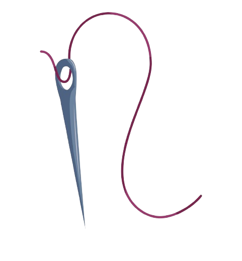

Hello, my name is Mason Shields. I have a bachelors degree from West Texas A&M University in Theater Performance. I have been involved in theater since my time in high school. It is a field that I am very passtionate about and look forward to having a job in this field in the future.I have several job fields that I would like to pursue in relation to the theater arts field.
Actor
The main job that involves my field of study directly is an actor. I currently have a degree with an emphasis in performing, so that would be the main field that my degree is relevant for. This is a job that I control since I have to audition for shows and movies and I plan to audition as much as I can. I hope to be able to get as many opportunities that I can while auditioning and pursue many different roles on stage and in film/TV.
Costume Designer
The secondary job that I plan to pursue while I audition for acting roles is that of a costumer. Costuming is something in the theater world that I also really enjoy doing and have had formal training in as part of the Theater Performance degree plan. Creating costumes and seeing people in my creations is a great joy to me. I love being able to see what I've been working on come to fruition on stage and in a performance. Being able to do this in a professional setting outside of college would be a true dream realized.
Teacher
The third job that I plan to pursue is a teacher. I would like to teach high school theater and move my way up to teach at a college level after that. I do also have goals to own an acting sutdio and teach privately as well. Teaching is something that I've been interested in since I started at college and would be a great fallback for me if I'm unable to find work directly in my field. It is an opportunity to bring everything that I've learned through my degree and help others learn it as well who may also have a passion in the same field that I do.